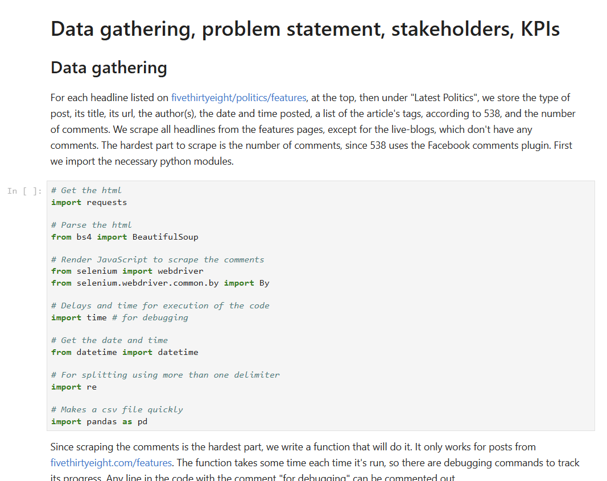
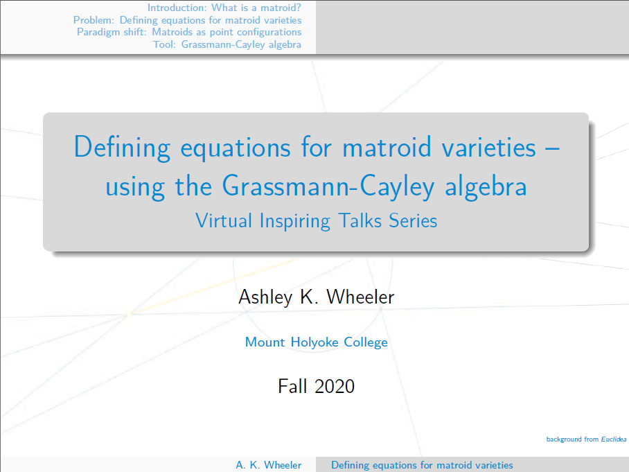

|
|
|
|
2024 election forecast (Nov 2024).
Forecasts, on each day leading up to the 2024
U.S. presidential election, who will win.
Predictions made using this
polling data
from 538, along with 538's polling averages for swing states, found on
this page.
|
Media
bias vs. reliability (Sep 2024).
Political bias (left/right) of around 800 news media
sources against
their reliability ratings, according to Ad Fontes Media. The data was scraped using
Python and
plotted using Tableau.
|
 |
2024
U.S. presidential election (Aug 2024).
Analyzed over
4,000 polls
spanning three years of data from 538. Daily rolling averages
for Donald Trump,
Kamala Harris, and Joe Biden, covering the period from April 7, 2021, to August 11,
2024 (periodic
updates since then). Toggle between polling data for likely
voters, registered
voters, and all voters.
|
"Do-nothing" congress (Jun 2024).
Using data from over 15,000 bills introduced in the 118th Congress, this project
trains a
model
to predict whether a bill will become law. Model outperforms the baseline accuracy
of 99.6%
(where the baseline predicts no bill will become law).
|
|
Ashley's FitBit stats (Apr 2023).
One year's worth of my FitBit data showing exercise and its impact on my sleep.
Dashboard made using d3.js.
|

538 project (Mar 2023).
Python script to scrape metadata from 538. A key feature of this script is a custom
function that renders JavaScript on each page to extract the number of comments from
the Facebook plugin.
|

Vitrual inspiring talk (Nov 2020).
YouTube playlist dedicated to promoting early career mathematicians. Presents a
project on
matroid varieties I completed in the late 2010s, aimed at an undergrad audience.
|